for
はデータの集合体（数字や文字が集まったもの）から順に要素を変数に代入し、要素の数だけ繰り返し処理をおこないます。
例えば、データの集まりが文字列の場合は、文字を一文字ずつ変数に代入しながら繰り返します。
数字のデータの集まりとしてはrange関数が便利です。
| for 変数 in データの集合： #コロンを忘れないこと。 実行する処理1 実行する処理2 [else: 実行する処理1 実行する処理2] |
| #繰り返したい処理はインデント（字下げ）します。 #else:はfor節の処理がすべて終わったときに実行します。for節でbreakが実行された時はelseは実行しません。 |
for のあとに変数、つづけて in のあとにデータの集合体を記述します。
まずは、文字を用意してみましょう。#コメント文は省略して構いません。
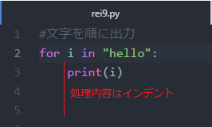
▼実行結果 文字を順に取得し、変数に代入しています。5文字のときは5回処理を繰り返すことになります。
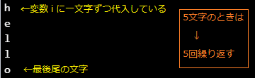
▼つづけてrei9ファイルにrange関数を使って繰り返し処理させてみます。
range関数を使うと簡単に回数指定ができます。たとえばrange（5）と入れると5回（0から4まで）のループ処理ができます。
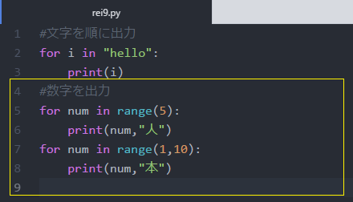
| #range関数の使い方 #range（ [初期値] , 終了値 , [増分] ）と書きます |
|
| range(100) range(5,100) range(10,100,2) range(5,-99,-3) |
[0,1,2,3…,99]
0から100を超えない整数を返す [5,6,7,8…,99] 5から100を超えない整数を返す [10,12,14…,98] 増分2で,10から98までの整数を返す [5,2,-1…,-97] 増分-3で,5から-97までの整数を返す |
| #[初期値]を省略すると0 #[増分]を省略すると1 #初期値から終了値を超えない整数リストを返します |
|
▼実行結果 カウンタ変数が終了値を超えてないのが分かります。
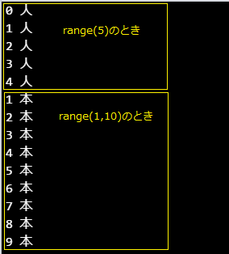
▼増分を変えて奇数を出力してみましょう。
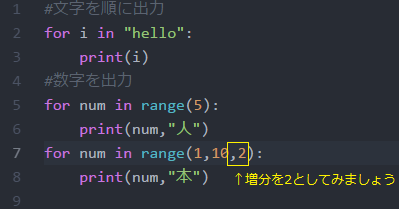
▼実行結果
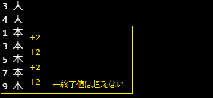
continueもbreakもif文といっしょに使います。
continue文に出会うと以降のループ内の実行内容を無視して、for文の先頭に戻ってきます。
break文は完全にループから抜け出すときに使います。
▼0から順に数字が出力されますが、変数が3の時にcontinue、7の時にbreakが実行されるプログラムです。
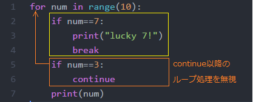
▼実行結果
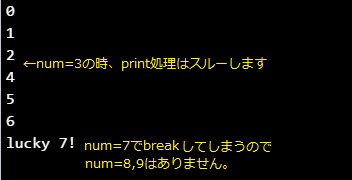
1から9までの整数について、奇数なのか偶数なのか判定するプログラムを作成してください。5行以内で書いてみよう。
▼実行結果
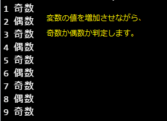
ヒント：剰余を返す演算子 % を使ってみましょう。a % b と書いたときにaをbで割ったあまりを返してくれます。(例) 10 % 3 → 1
1以上2021以下の整数のうち、3でも4でも割り切れないものを考えます。そのうち、2の倍数と5の倍数はそれぞれ何個あるか数えるプログラムを作成しなさい。
▼実行結果
for文を使ってかけ算九九を出力するプログラムを作成します。3行くらいで書いてみましょう。
| ▼実行結果 | |
| 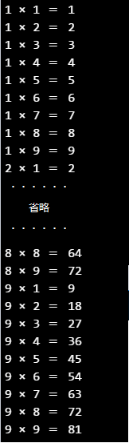 | forループの中にforループを複数作ることができます（多重ループ） 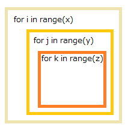 かけ算九九の場合は、二重ループで記述します。 ←内側のループが終了値に到達すると（1の段の計算が終わると）、 外側ループのカウンターが増加（2の段の計算を開始）しています。 |